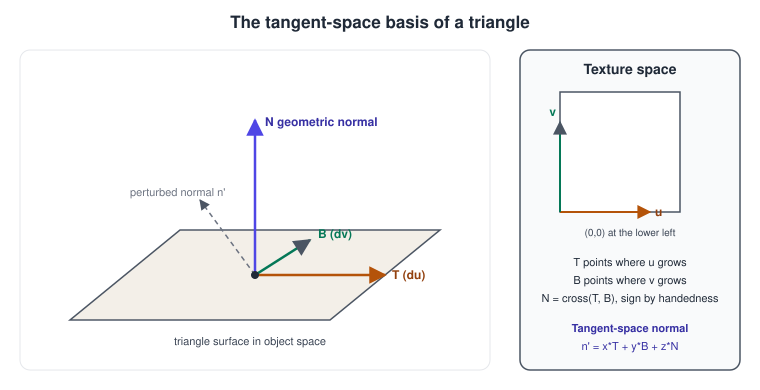
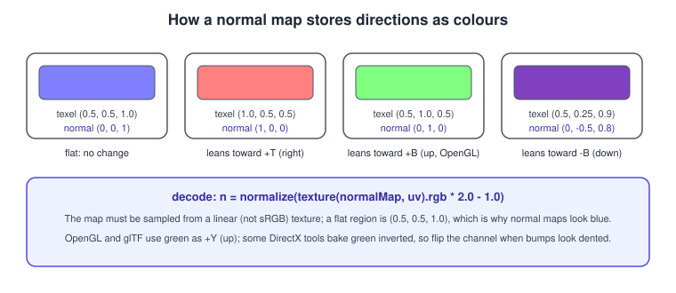
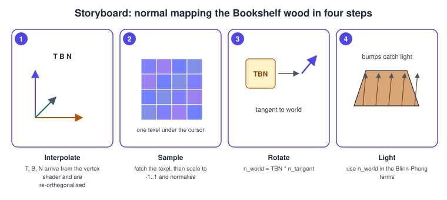

Materials and Normal Mapping in OpenGL
|
This content was generated with the assistance of AI and should be verified against the official documentation before being relied on in production. |
A material is the set of numbers and textures that tell a lighting shader how one surface reacts to light: its colour, how glossy it is, how bumpy it looks. Blinn-Phong needs a diffuse colour, a specular colour and a shininess; a physically based material needs different inputs, but both can be driven by textures so that each texel of the surface behaves differently. Normal mapping is the most effective of these textures: it stores a perturbed surface normal in every texel, so a flat wooden board catches the lamp as if it had grain, and a book cover as if it had embossed lettering, without adding a single triangle.
The facts were checked in November 2026. The versions documented are OpenGL 4.6 with GLSL 4.60 and OpenGL ES 3.2 with GLSL ES
3.20; the examples target a 4.1 core context (#version 410 core), which runs on every desktop platform including macOS, and note
the differences for ES 3.0 and later. Nothing on this page needs an extension, but the compressed texture formats mentioned
have different availability on desktop and mobile hardware. The lighting vocabulary (N, L, V, H, the model terms) is defined in
Lighting with Blinn-Phong and the general explanation of normal maps is in
Lighting and Shading Models.
Why tangent space
A normal map could in principle store a normal in object space: the texel colour is the world direction the surface should face. That only works for an object that is never deformed, because rotating or animating the mesh changes what "up" means for the texture, and the same texture cannot be reused on different faces. Almost all normal maps are therefore stored in tangent space, relative to the surface itself. In tangent space the unperturbed normal is always \( (0, 0, 1) \); a texel that leans to the right of the surface stores a positive x, a texel that leans towards the top of the texture stores a positive y.
The three axes of that frame at a vertex are:
-
T, the tangent, the direction on the surface in which the texture coordinate \( u \) increases.
-
B, the bitangent (also called binormal), the direction in which \( v \) increases.
-
N, the geometric normal of the surface.

The matrix with the three vectors as columns, \( TBN = [\,\mathbf{T}\;\mathbf{B}\;\mathbf{N}\,] \), rotates a vector from tangent space into world space (or into whatever space T, B and N are expressed in). Sampling a normal map therefore takes three steps: fetch the texel, decode it to a vector, rotate it by the TBN matrix, and use the result as the N of the lighting equations.

A colour channel stores values in \( [0, 1] \), a direction component lies in \( [-1, 1] \), so the decode is \( \mathbf{n} = 2\,\mathrm{rgb} - 1 \), followed by a normalisation because 8-bit quantisation and filtering leave the vector slightly short. A flat area is \( (0.5, 0.5, 1.0) \), the pale blue that every normal map is recognisable by.
Where the tangents come from
The tangent frame must be consistent with how the texture is mapped, so it is derived from the UV coordinates. There are three common sources, and they should be chosen once per asset pipeline.
Stored tangents. The glTF 2.0 format has an optional TANGENT attribute: a vec4 whose xyz is the tangent and whose w is
1.0 or -1.0, the handedness used to rebuild the bitangent as \( \mathbf{B} = w\,(\mathbf{N} \times \mathbf{T}) \).
When the attribute is absent the specification says that clients must compute tangents with the MikkTSpace algorithm, which is
the one most baking tools use, so that the shaded result matches the baker.
CPU computation per triangle. From a triangle with positions \( p_0, p_1, p_2 \) and texture coordinates \( uv_0, uv_1, uv_2 \), the edge vectors \( e_1 = p_1 - p_0 \), \( e_2 = p_2 - p_0 \) and the UV differences \( (\Delta u_1, \Delta v_1) \), \( (\Delta u_2, \Delta v_2) \) satisfy \( e_i = \Delta u_i\,\mathbf{T} + \Delta v_i\,\mathbf{B} \). Solving the 2x2 system gives:
\[ \mathbf{T} = \frac\{ \Delta v_2\,e_1 - \Delta v_1\,e_2 }{ \Delta u_1 \Delta v_2 - \Delta u_2 \Delta v_1 } \qquad \mathbf{B} = \frac\{ \Delta u_1\,e_2 - \Delta u_2\,e_1 }{ \Delta u_1 \Delta v_2 - \Delta u_2 \Delta v_1 } \]
Per-vertex tangents are the sum of the tangents of the triangles that share the vertex, orthogonalised against the normal.
Fragment-shader derivatives. When there is no tangent attribute, the screen-space derivatives dFdx and dFdy of the world
position and of the UV give T and B per pixel. This needs no vertex data and works on procedural geometry, at the cost of
a little arithmetic, a less accurate frame on thin triangles and discontinuities at triangle boundaries.
Computing tangents on the CPU
#include <glm/glm.hpp>
#include <cmath>
#include <vector>
struct Vertex {
glm::vec3 pos;
glm::vec3 normal;
glm::vec2 uv;
glm::vec4 tangent; // xyz = tangent, w = handedness (+1 or -1), like glTF
};
// Adds the tangent of every triangle to its three vertices, then orthogonalises.
void computeTangents(std::vector<Vertex>& v, const std::vector<unsigned>& idx)
{
std::vector<glm::vec3> tan(v.size(), glm::vec3(0.0f));
std::vector<glm::vec3> bit(v.size(), glm::vec3(0.0f));
for (size_t i = 0; i + 2 < idx.size(); i += 3) {
const Vertex& a = v[idx[i]];
const Vertex& b = v[idx[i + 1]];
const Vertex& c = v[idx[i + 2]];
const glm::vec3 e1 = b.pos - a.pos, e2 = c.pos - a.pos;
const glm::vec2 d1 = b.uv - a.uv, d2 = c.uv - a.uv;
const float det = d1.x * d2.y - d2.x * d1.y;
if (std::abs(det) < 1e-12f) continue; // degenerate UV mapping
const float r = 1.0f / det;
const glm::vec3 t = (e1 * d2.y - e2 * d1.y) * r;
const glm::vec3 bt = (e2 * d1.x - e1 * d2.x) * r;
for (int k = 0; k < 3; ++k) { tan[idx[i + k]] += t; bit[idx[i + k]] += bt; }
}
for (size_t i = 0; i < v.size(); ++i) {
const glm::vec3 n = v[i].normal;
glm::vec3 t = tan[i] - n * glm::dot(n, tan[i]); // Gram-Schmidt
t = glm::length(t) > 1e-8f ? glm::normalize(t) : glm::vec3(1, 0, 0);
const float w = glm::dot(glm::cross(n, t), bit[i]) < 0.0f ? -1.0f : 1.0f;
v[i].tangent = glm::vec4(t, w);
}
}The handedness w handles mirrored UVs, for example a book model whose left and right sides
share one half of a texture: without it the bumps on the mirrored half look inverted.
The shaders
The vertex shader builds the world-space frame. N uses the normal matrix, as explained on the lighting page; T is a direction that lies on the surface, so it transforms with the upper 3x3 of the model matrix.
#version 410 core
layout(location = 0) in vec3 aPos;
layout(location = 1) in vec3 aNormal;
layout(location = 2) in vec2 aUV;
layout(location = 3) in vec4 aTangent; // xyz tangent, w handedness
uniform mat4 uModel;
uniform mat4 uView;
uniform mat4 uProj;
uniform mat3 uNormalMatrix;
out VS_OUT {
vec3 worldPos;
vec2 uv;
mat3 tbn; // columns T, B, N in world space
} vs;
void main()
{
vec3 N = normalize(uNormalMatrix * aNormal);
vec3 T = normalize(mat3(uModel) * aTangent.xyz);
T = normalize(T - dot(T, N) * N); // keep T perpendicular to N
vec3 B = cross(N, T) * aTangent.w;
vec4 world = uModel * vec4(aPos, 1.0);
vs.worldPos = world.xyz;
vs.uv = aUV;
vs.tbn = mat3(T, B, N);
gl_Position = uProj * uView * world;
}A mat3 can be passed between stages like any other value; it uses three consecutive input and output locations. After the
rasteriser interpolates the columns they are no longer exactly orthogonal, so the fragment shader may orthonormalise again.
#version 410 core
in VS_OUT {
vec3 worldPos;
vec2 uv;
mat3 tbn;
} fs;
uniform sampler2D uAlbedoMap; // sRGB texture (GL_SRGB8_ALPHA8), decoded to linear on sampling
uniform sampler2D uNormalMap; // linear texture (GL_RGB8 or a two-channel format)
uniform sampler2D uSpecMap; // linear single channel: how glossy each texel is
uniform float uNormalScale; // 1.0 = as baked, smaller flattens the bumps
uniform vec3 uViewPos;
uniform vec3 uLightPos;
uniform vec3 uLightColor;
uniform float uAmbient;
uniform float uShininess;
out vec4 FragColor;
void main()
{
vec3 albedo = texture(uAlbedoMap, fs.uv).rgb;
float gloss = texture(uSpecMap, fs.uv).r;
vec3 t = texture(uNormalMap, fs.uv).xyz * 2.0 - 1.0;
t.xy *= uNormalScale; // glTF normalTexture.scale
vec3 N = normalize(fs.tbn * normalize(t));
vec3 L = normalize(uLightPos - fs.worldPos);
vec3 V = normalize(uViewPos - fs.worldPos);
vec3 H = normalize(L + V);
float ndotl = max(dot(N, L), 0.0);
float spec = ndotl > 0.0 ? pow(max(dot(N, H), 0.0), uShininess) : 0.0;
vec3 color = uAmbient * albedo * uLightColor
+ ndotl * albedo * uLightColor
+ spec * gloss * uLightColor;
FragColor = vec4(color, 1.0);
}Source: OpenGL 4 reference: texture.
The statement t.xy *= uNormalScale scales the x and y components before the re-normalisation, which is how the glTF
specification defines the scale of a normal texture. With a scale of 0 the surface looks flat; with a scale above 1 the bumps are
exaggerated.

A fragment-shader alternative without tangent attributes
When a mesh has no tangents, a cotangent frame can be built from derivatives. The function below returns a mat3 that
replaces fs.tbn in the shader above:
mat3 cotangentFrame(vec3 N, vec3 worldPos, vec2 uv)
{
vec3 dp1 = dFdx(worldPos);
vec3 dp2 = dFdy(worldPos);
vec2 duv1 = dFdx(uv);
vec2 duv2 = dFdy(uv);
vec3 dp2perp = cross(dp2, N);
vec3 dp1perp = cross(N, dp1);
vec3 T = dp2perp * duv1.x + dp1perp * duv2.x;
vec3 B = dp2perp * duv1.y + dp1perp * duv2.y;
float invmax = inversesqrt(max(dot(T, T), dot(B, B)));
return mat3(T * invmax, B * invmax, N);
}The derivatives are computed on 2x2 pixel quads, so they must be evaluated in uniform control flow. Do not call
cotangentFrame inside a branch that only some pixels of a quad take.
The normal map texture
Create the map as a linear texture: GL_RGB8 rather than GL_SRGB8, because the values are directions, not colours, and an
sRGB decode would bend them. The Bookshelf asset set ships base colour textures only, so the wood normal map is produced at
load time from the brightness of the wood texture with a Sobel filter, which is also how bump maps from height maps are
converted:
#include <glad/gl.h>
#include <glm/glm.hpp>
#include <algorithm>
#include <cstdint>
#include <vector>
// height: w*h bytes, 0..255. strength: larger means steeper bumps.
std::vector<std::uint8_t> normalMapFromHeight(const std::uint8_t* height, int w, int h, float strength)
{
auto at = [&](int x, int y) {
x = (x + w) % w; y = (y + h) % h; // wrap: the wood tiles
return height[y * w + x] / 255.0f;
};
std::vector<std::uint8_t> out(static_cast<size_t>(w) * h * 3);
for (int y = 0; y < h; ++y) {
for (int x = 0; x < w; ++x) {
const float dx = (at(x + 1, y - 1) + 2 * at(x + 1, y) + at(x + 1, y + 1))
- (at(x - 1, y - 1) + 2 * at(x - 1, y) + at(x - 1, y + 1));
const float dy = (at(x - 1, y + 1) + 2 * at(x, y + 1) + at(x + 1, y + 1))
- (at(x - 1, y - 1) + 2 * at(x, y - 1) + at(x + 1, y - 1));
// Image rows grow downward but v grows upward, hence +dy for the green channel.
glm::vec3 n = glm::normalize(glm::vec3(-dx * strength, dy * strength, 1.0f));
const size_t o = (static_cast<size_t>(y) * w + x) * 3;
for (int c = 0; c < 3; ++c)
out[o + c] = static_cast<std::uint8_t>(std::clamp(n[c] * 0.5f + 0.5f, 0.0f, 1.0f) * 255.0f + 0.5f);
}
}
return out;
}
GLuint createNormalMap(const std::vector<std::uint8_t>& rgb, int w, int h)
{
GLuint tex;
glGenTextures(1, &tex);
glBindTexture(GL_TEXTURE_2D, tex);
glPixelStorei(GL_UNPACK_ALIGNMENT, 1); // RGB rows are not 4-byte aligned for odd widths
glTexImage2D(GL_TEXTURE_2D, 0, GL_RGB8, w, h, 0, GL_RGB, GL_UNSIGNED_BYTE, rgb.data());
glGenerateMipmap(GL_TEXTURE_2D);
glTexParameteri(GL_TEXTURE_2D, GL_TEXTURE_MIN_FILTER, GL_LINEAR_MIPMAP_LINEAR);
glTexParameteri(GL_TEXTURE_2D, GL_TEXTURE_MAG_FILTER, GL_LINEAR);
glTexParameteri(GL_TEXTURE_2D, GL_TEXTURE_WRAP_S, GL_REPEAT);
glTexParameteri(GL_TEXTURE_2D, GL_TEXTURE_WRAP_T, GL_REPEAT);
return tex;
}Source: OpenGL 4 reference: glTexImage2D and glGenerateMipmap.
The Bookshelf wood and cover textures are in the repository as bookshelf.glb, with the
individual images in the bookshelf-textures folder next to it. On OpenGL 4.2 and later and on ES 3.0, immutable storage
with glTexStorage2D is the recommended allocation; the textures page covers it in
Textures and Samplers.
Texture formats for normal maps
| Format | Where | Notes |
|---|---|---|
|
everywhere |
Simple, three 8-bit channels, 3 bytes per texel. Decode with |
|
GL 3.0+, ES 3.0+ |
Store only x and y; rebuild \( z = \sqrt\{ 1 - x^{2} - y^{2} } \) in the shader since z is never negative in tangent space. Saves 33 percent of memory. |
|
desktop GL 3.0+ (RGTC core in 3.0) |
Two independent compressed channels, 8 bits per texel, the best desktop choice. Rebuild z in the shader. |
|
ES 3.0+ and GL 4.3+ |
Two-channel compressed format, the ES 3.0 counterpart of BC5. |
ASTC (for example |
core (LDR profile) in ES 3.2; an extension on earlier ES versions and on desktop GPUs that support it |
Flexible block sizes. Normal maps are compressed with a two-channel mode; check the extension at run time. |
Never compress a normal map with a format designed for colour such as DXT1: the blocks cause visible faceting in the lighting.
Mipmaps of a normal map average neighbouring directions, so distant texels get shorter, less-perturbed vectors. That is the correct behaviour (the surface looks smoother as it recedes) and is why the shader re-normalises after sampling. For specular shimmer on distant bumpy surfaces, techniques such as Toksvig factors reduce the shininess with the length of the filtered normal.
Material data in the application
A material is a bundle of textures and uniforms bound before a draw call. Keep it as plain data and bind it in one function so that draws can be sorted by material:
struct Material {
GLuint albedoMap = 0; // sRGB
GLuint normalMap = 0; // linear
GLuint specMap = 0; // linear
float shininess = 64.0f;
float normalScale = 1.0f;
};
void bindMaterial(GLuint prog, const Material& m)
{
glActiveTexture(GL_TEXTURE0); glBindTexture(GL_TEXTURE_2D, m.albedoMap);
glActiveTexture(GL_TEXTURE1); glBindTexture(GL_TEXTURE_2D, m.normalMap);
glActiveTexture(GL_TEXTURE2); glBindTexture(GL_TEXTURE_2D, m.specMap);
glUniform1i(glGetUniformLocation(prog, "uAlbedoMap"), 0);
glUniform1i(glGetUniformLocation(prog, "uNormalMap"), 1);
glUniform1i(glGetUniformLocation(prog, "uSpecMap"), 2);
glUniform1f(glGetUniformLocation(prog, "uShininess"), m.shininess);
glUniform1f(glGetUniformLocation(prog, "uNormalScale"), m.normalScale);
}Source: OpenGL 4 reference: glActiveTexture and glBindTexture.
A sampler uniform holds the number of a texture unit, set with glUniform1i; it is not a texture name. The sampler uniforms and
their unit assignment can also be written once in GLSL with layout(binding = 1) on GL 4.2 and later, which does not exist
in the 4.1 baseline of this page. The Bookshelf scene uses four materials from the glTF file: wood for the shelf, and cover,
spine and pages for the books.
Specular, gloss and other material maps
The same per-texel idea applies to every other material input.
-
A specular map (or gloss map) multiplies the highlight, so that the glossy cover shows a highlight and the cloth spine does not, as in the shader above. It is a single linear channel.
-
A shininess map changes the exponent per texel; in a physically based pipeline this becomes the roughness map.
-
An ambient occlusion map darkens crevices, applied to the ambient term only. In glTF it is the red channel of the occlusion texture.
-
An emissive map adds light that the surface itself emits, for example the glowing lamp.
-
An opacity map or the alpha channel of the base colour drives transparency or alpha testing, see Blending, Depth and Stencil.
-
A height map can drive parallax mapping, which shifts the texture coordinate along the view direction by the height to fake depth. It costs extra texture reads and breaks at grazing angles; use it sparingly.
Pack several single-channel maps into one texture (occlusion, roughness and metallic in the red, green and blue channels, the glTF layout) to reduce texture reads and binds; the packed texture must be linear.
Common mistakes
-
Sampling the normal map as sRGB. The decoded values are bent and the lighting looks lumpy. Use a linear internal format.
-
Wrong green channel. OpenGL and glTF maps have green pointing up (+Y); some DirectX-oriented tools bake green inverted. If bumps look dented where they should protrude, flip green (
t.y = -t.y) or re-export. -
Skipping the normalisation. Decoded, filtered and interpolated vectors are not unit length.
-
Normals from the mesh instead of the map. Passing the geometric normal into the lighting equations leaves the map unused. Check that the mapped normal reaches the lighting code.
-
Mirror seams. Texture coordinates that are mirrored without a handedness sign give inverted bumps on one half; keep
w. -
Non-orthogonal frames. T and N that are not perpendicular shear the lighting. Orthogonalise with Gram-Schmidt.
-
Transforming T with the normal matrix. The normal matrix is for normals; tangents use the model matrix.
-
Sharing tangents across UV seams. Vertices at a seam need separate tangents because their UV derivatives differ; duplicate them as you do for normals at hard edges.
-
Compressing with the wrong codec. Use two-channel formats or a normal-map-aware encoder.
Performance notes
-
A normal-mapped fragment costs one more texture read, a matrix multiply and a normalisation compared to plain Blinn-Phong, which is cheap on any GPU of the last decade.
-
Tangent attributes add 16 bytes per vertex. Quantising them to
GL_BYTEorGL_SHORTnormalised components saves memory bandwidth; see Buffers and Vertex Specification. -
Packing normal, roughness and occlusion into as few textures as possible reduces texture units and cache pressure, and compressed formats cut memory bandwidth by 4 to 8 times.
-
On mobile tile-based GPUs, fetches from compressed textures are particularly valuable; ASTC and ETC2 are the usual choices.
-
Mipmaps are mandatory for minified normal maps; without them the bump detail shimmers.
What the books cover and where they are outdated
The classic books introduce bump mapping and normal mapping with GLSL 1.10-era shaders, gl_MultiTexCoord0,
gl_NormalMatrix, gl_TextureMatrix and the attribute and varying keywords, and often compute the tangent in the vertex
shader from custom attribute slots. The technique is unchanged, but all of those built-ins and keywords are gone from the core
profile.
| Older material | What it says | What is current |
|---|---|---|
OpenGL SuperBible, 4th edition (2007) |
Per-pixel lighting with GLSL 1.10/1.20, fixed-function material state |
Core profile; tangent as a vertex attribute; |
OpenGL ES 2.0 Programming Guide (2008) |
Texture units, |
GLSL ES 3.00 and later; ETC2 and ASTC compressed textures and RG11 normal maps; ES 3.2 on Android API 24+ |
OpenGL ES 3.0 Programming Guide (2014) |
ES 3.0 textures including ETC2 and texture arrays |
Same API; ES 3.1 and 3.2 add image load/store, compute and ASTC in the core |
Recent changes
-
ASTC (LDR) compression is part of OpenGL ES 3.2 (2015, revision 2022); on desktop it remains an extension, with BC5 (RGTC) the portable choice.
-
OpenGL 4.5 (2014) and ARB_direct_state_access make the texture creation shown above shorter with
glCreateTexturesandglTextureStorage2D; see Direct State Access. -
glTF 2.0 standardised the normal-texture scale, the tangent attribute and the MikkTSpace fallback, so a model from any tool agrees on the frame.
-
The shading itself moves to a physically based model in PBR Basics; the normal map and TBN code of this page carry over unchanged.
References
-
OpenGL 4 reference pages (texture, dFdx, glTexImage2D, glGenerateMipmap, glActiveTexture)
-
glTF 2.0 specification (normalTexture, TANGENT attribute, MikkTSpace)